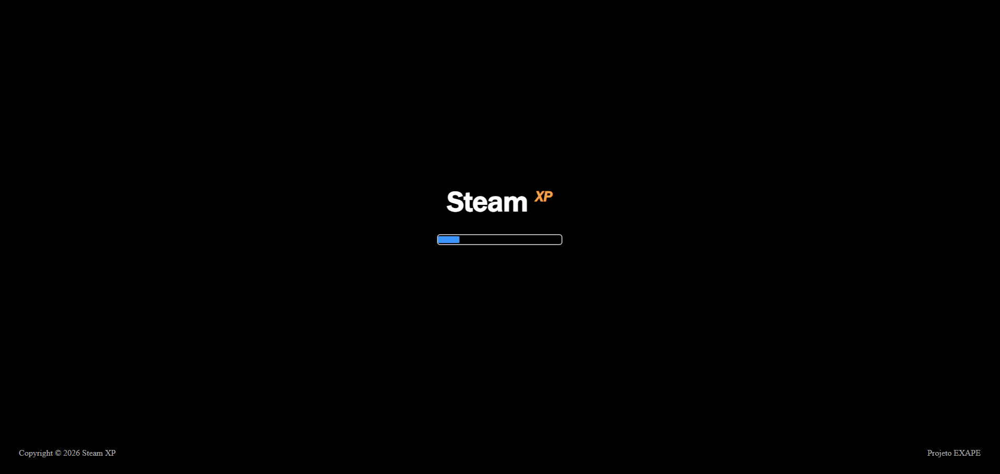
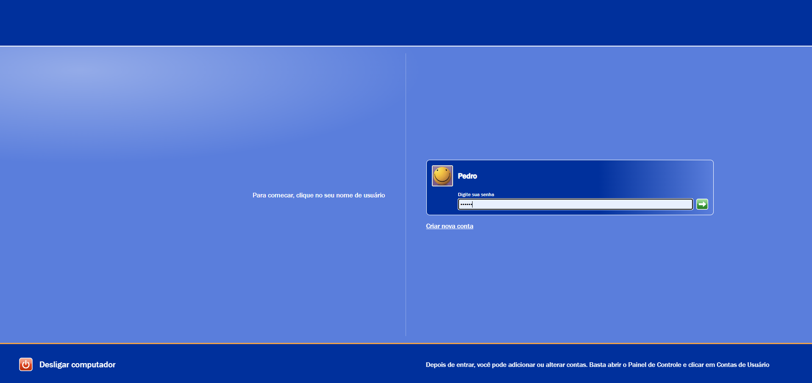
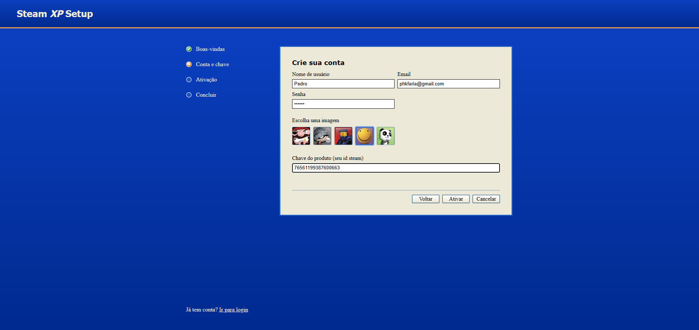
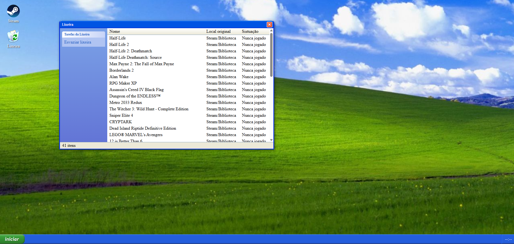
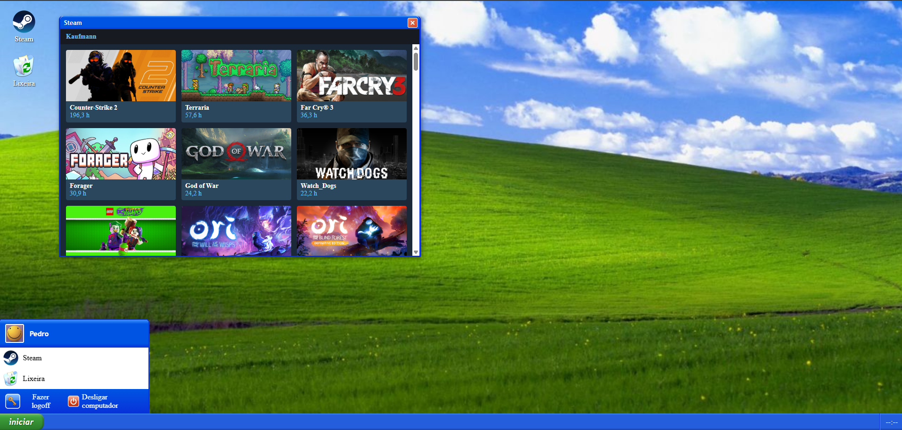
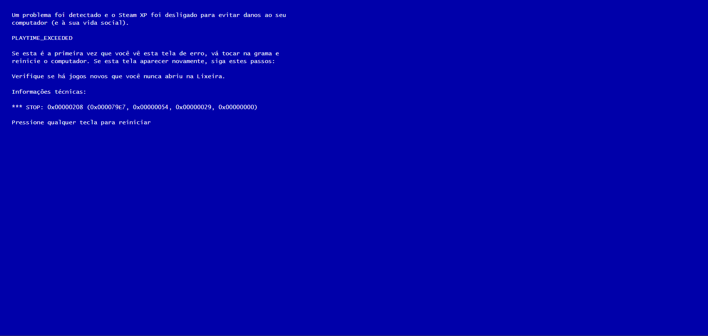

Sua Steam no Tema do Windows XP
Uma dashboard da Steam disfarçada de Windows XP. Você cria uma conta usando o seu Steam ID, faz login e vê sua biblioteca de jogos dentro de uma área de trabalho retrô. Os jogos que você nunca abriu vão parar na Lixeira.
Criar contaTelas do projeto






Roadmap do Windows
- Windows 1.0
- Windows 95
- Windows 98
- Windows 2000
- Windows XP
- Windows Vista
- Windows 7
- Windows 8
- Windows 10
- Windows 11
Tecnologias
-
HTML5 estrutura semântica, formulário, listas e tabela
-
CSS3 variáveis, grid, flexbox e animações
-
JavaScript módulos, localStorage, sessionStorage e fetch
-
API da Steam biblioteca de jogos e tempo jogado
Aviso
Este é um projeto educacional, desenvolvido para a disciplina WEB1 para o EXAPE, sem fins comerciais. Não tem nenhuma afiliação com a Microsoft ou com a Valve. Windows XP, Steam e seus respectivos nomes, marcas e imagens pertencem aos seus donos.